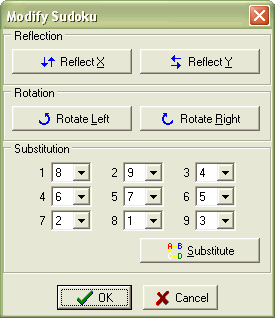

This dialog allows you to change the appearance of the puzzle. None of these modifications fundamentally change the puzzle - it still has the same solving route and difficulty - but you can change how it appears.

Reflection Reflects the puzzle about the X or Y axis.
Rotation Rotates the puzzle left (anti or counter-clockwise) or right (clockwise.)
Substitution Allows you to replace one digit with another. In the screenshot above, if the "Substitute" button was pressed, any 1s would be changed to 8, any 2s to 9, 3s to 4 etc. (The initial substitution configuration will change the puzzle so that the top row becomes "123456789", so it could be said to "normalise" the puzzle. It isn't a good idea to leave the puzzle like this though, as it would give an unfair advantage if you knew what the whole top row was.)